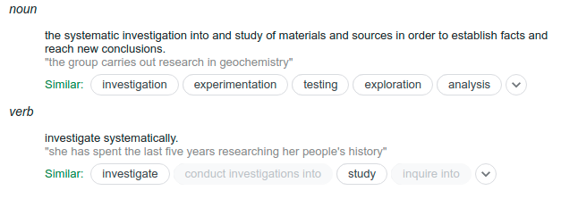
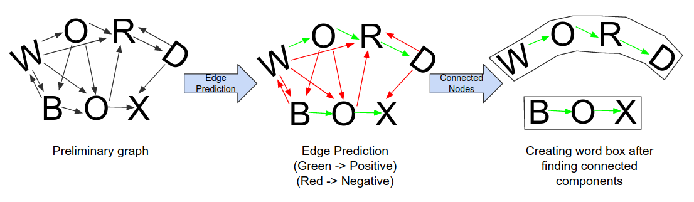
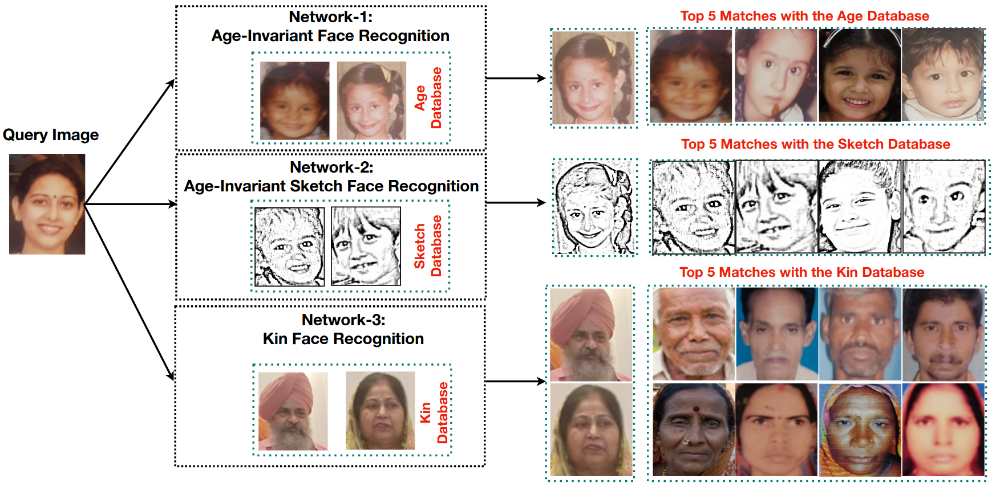
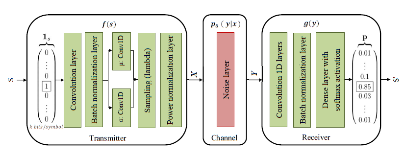

Research

Last Updated: 26th April
My research goal is to understand what intelligence means and trying to reproduce it artificially so that we can have a tool which will reduce the development process drastically in every field. I believe that to achieve this we would require a good understanding of psychology, and an intutive sense of why and how humans function.
I started my journey in the academia by focusing on Computer Vision because of its popularity and ease of applicatoin but my interests have diverged into graphs and audio as well.
I have mentioned some brief description of my publications below. To get a list of all my publications please visit here .

A novel Nonconvex regularization for accurate low-rank plus sparse constrained model
Last Updated: 6th Jan 2021
Human child trafficking has become a global epidemic with over 10 million children forced into labor or prostitution. Children kidnapped from poverty-stricken sections of India have been especially vulnerable due to the lack of initiative from law enforcement agencies to retrieve them. The facial image of the children is... generally used to retrieve and reunite the children with their families. However, the facial features of children change drastically over short periods making it hard to recognize them using these images. In addition, images of several kidnapped children is often unavailable as several families in India never took picturesof their children due to the lack of resources. This further makes it difficult to identify these children. In this paper, we propose the ChildrEN SafEty and Retrieval (CENSER) system that is being used by non-profit organizations in India to retrieve abducted children from brothels. The CENSER system encodes the input image of a child using the proposed Memory Augmented ScatterNet ResNet Hybrid (MSRHN) network and queries the encoding with the (i) Age, (ii) Kinship, and (iii) Sketch databases to establish the child’s identity. The MSRHN network is pre-trained on the KinFace database and then fine-tuned on the three databases. The network also has the capability to learn new faces of children in one-shot using the memory buffer. The performance of the proposed model is compared with several state-of-the-art methods.

ChildrEN SafEty Retrieval (CENSER) System for Retrieval of Kidnapped Children from Brothels in India using the Memory Augmented ScatterNet ResNet Hybrid (MSRHN) Network
Last Updated: 6th Jan 2021
Human child trafficking has become a global epidemic with over 10 million children forced into labor or prostitution. Children kidnapped from poverty-stricken sections of India have been especially vulnerable due to the lack of initiative from law enforcement agencies to retrieve them. The facial image of the children is... generally used to retrieve and reunite the children with their families. However, the facial features of children change drastically over short periods making it hard to recognize them using these images. In addition, images of several kidnapped children is often unavailable as several families in India never took picturesof their children due to the lack of resources. This further makes it difficult to identify these children. In this paper, we propose the ChildrEN SafEty and Retrieval (CENSER) system that is being used by non-profit organizations in India to retrieve abducted children from brothels. The CENSER system encodes the input image of a child using the proposed Memory Augmented ScatterNet ResNet Hybrid (MSRHN) network and queries the encoding with the (i) Age, (ii) Kinship, and (iii) Sketch databases to establish the child’s identity. The MSRHN network is pre-trained on the KinFace database and then fine-tuned on the three databases. The network also has the capability to learn new faces of children in one-shot using the memory buffer. The performance of the proposed model is compared with several state-of-the-art methods.

AEVB-Comm: An Intelligent CommunicationSystem based on AEVBs
Last Updated: 6th Jan 2021
In recent years, applying Deep Learning (DL) techniques emerged as a common practice in the communication system, demonstrating promising results. The present paper proposes a new Convolutional Neural Network (CNN) based Variational Autoencoder (VAE) communication system. The VAE (continuous latent space) based communication systems confer unprecedented improvement in... the system performance compared to AE (distributed latent space) and other traditional methods. We have introduced an adjustable hyperparameter β−VAE in the proposed VAE, which is also known as β− VAE VAE, resulting in extremely disentangled latent space representation. Furthermore, a higher-dimensional representation of latent space is employed, reducing the Block Error Rate (BLER). The CNN based VAE architecture performs the encoding and modulation at the transmitter, whereas decoding and demodulation at the receiver. Finally, to prove that a continuous latent space-based system designated VAE performs better than the other and 4n dimensional representation is better than 2n representaion, various simulation results supporting the both has been conferred under normal and noisy conditions.

I am a final year undergraduate student at the National Institute of Technology, Warangal, studying Electronics and Communication Engineering. I started research in machine learning in my freshman year of UG. My propensity to research led me to take up various internships and research projects during my undergraduate study. I have collaborations at the Indian Institute of Science, Bangalore; the Indian Institute of Technology, Dharwad, and I also work as a part-time Machine Learning Researcher at Skylark Labs LLC.
During my projects, I explored various domains of ML including non-convex optimization, Deep Learning, Computer Vision, Deep Reinforcement Learning, and Robotics. I'm currently seeking positions to pursue MSc or a Ph.D.
Contact Information
Gmaild: vamshi.hemadri@gmail.com
LinkedIn
Google Scholar
GitHub
Orcid
Facebook
Call: +91 90004 38694